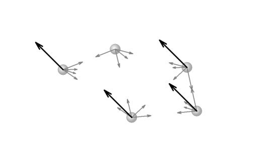

- Fig. 1
- Lănţişor format din agrafe pentru hârtie.
|
- Fig. 2
- Lănţişorul şi bila urcă şi coboară asemănător.
|
- Fig. 3
- Undeva, în "centrul" oricărui corp există un punct special − centrul de masă al corpului.
|
- Fig. 4
- Poziţia centrului de masă al unui ansamblu de puncte materiale.
|
- Fig. 5
- Lănţişorul de agrafe formează o buclă circulară.
|
- Fig. 6
- Punctele materiale sunt aranjate simetric faţă de centrul buclei.
|
- Fig. 7
- Centrul de masă al lănţişorului care formează o buclă circulară este chiar în centrul buclei.
|

- Fig. 8
- Forţele care acţionează asupra punctelor materiale care alcătuiesc un sistem.
|
- Fig. 9
- Asupra fiecărui punct material acţionează o forţă totală internă şi una externă.
|